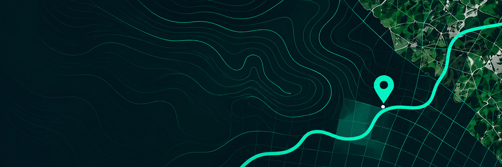
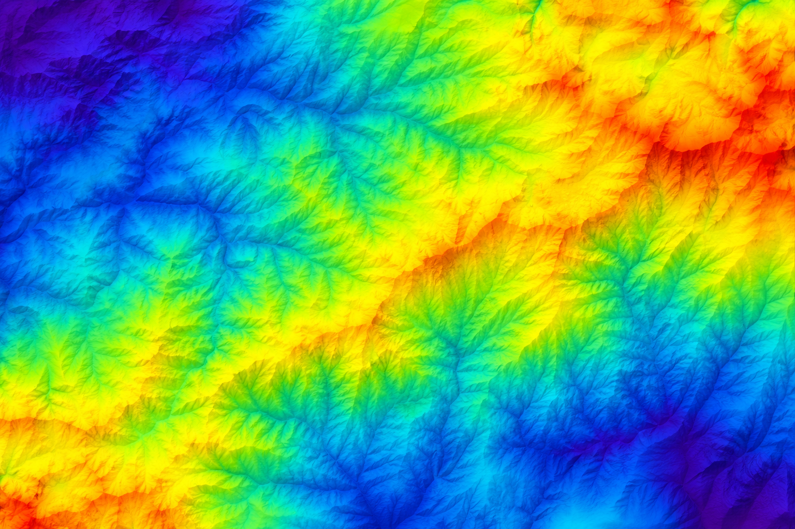
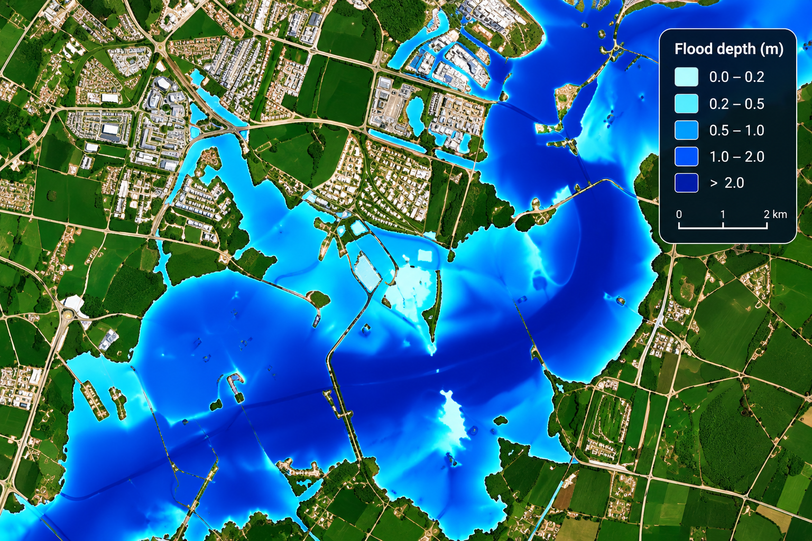
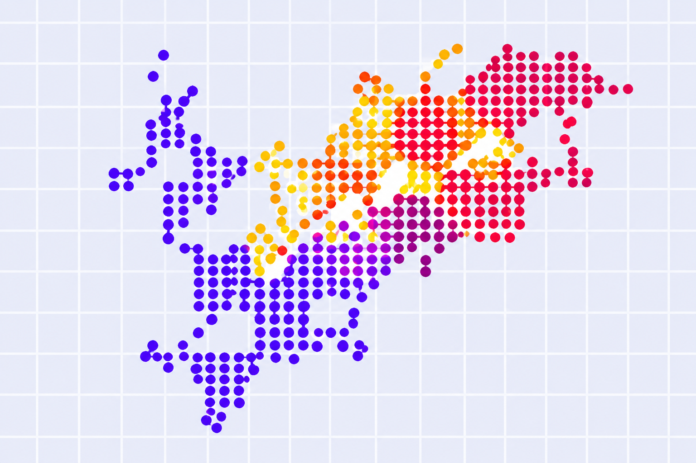
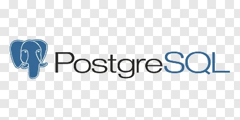
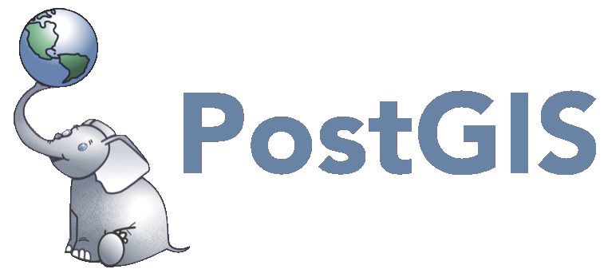

Lívia Degrossi, Ph.D.
Geospatial Software Engineer | Data Science | Backend Development
Building systems and intelligent solutions for spatial data
What I Build
Geospatial Systems
Spatial data pipelines, vector and raster processing, GeoTIFF, and PostGIS
Backend Development
Robust and scalable APIs and backend services with Python, FastAPI, and PostgreSQL
Data Science
Applied machine learning and spatial modelling to extract insights from geospatial data
Featured Projects

GeoTIFF Processing API
A REST API for raster data processing (e.g. format conversion) and storage.

Spatial Decision Support System
The OGITO-FastFlood is a web-based decision support system that integrates the FastFlood simulation model, a super-fast flood simulation model that has been developed at the Faculty of Geo-Information Science and Earth Observation (ITC), for planning flood mitigation interventions.

MAUP influence on Data Quality Assessment
Assessing the quality of aggregated spatial data depends on the definition of the units of analysis. The Modifiable Areal Unit Problem (MAUP) might affect the results of statistical analyses, leading to potentially different relationships among variables used to measure the data quality.

